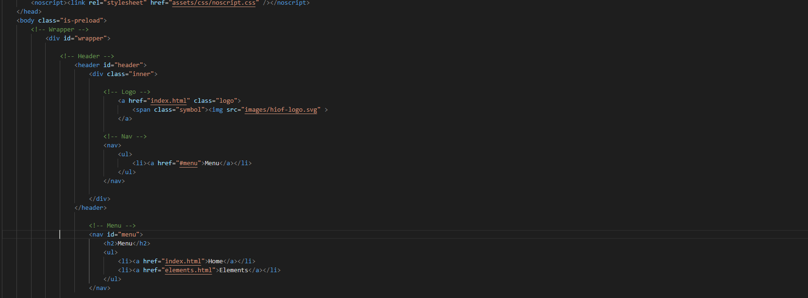

Prosjekt 1. Prosjektstyring
I denne oppgaven skulle vi sette opp Github Repository med mapper for prosjekter og hoste denne i Github Pages. Her skal vi ha med en presentasjon av prosjekter og seg selv.
Jeg har valgt å bruke en mal av @ajlkn fra HTML5 UP. Jeg har tilpasset denne malen ved å fjerne unødvendig mye footer, tatt vekk en god del av menyen. Deretter har jeg valgt å endre alle prosjektknappene til grå for å få en mer nøytral farge. I dette prosjektet har jeg lært å sette opp GitHub og hoste det i GitHub pages.